06-Linux基础二一. 今日目标二. 今日内容(一) Linux权限管理命令1. 资源权限管理权限介绍资源类型修改资源权限2. 组管理创建组删除组3. 用户管理创建用户删除用户用户切换修改资源的用户和组(二) Linux系统管理命令1. 网络管理命令网络测试命令查看网络状态关闭与启动网卡查询网络状态 2. 防火墙管理命令开启或关闭防火墙3. 其他系统管理命令查看系统进程杀死进程(三) Linux下软件安装1. Linux下软件安装方式2. 上传安装文件3. Linux下安装JDK1) 卸载CentOS自带的jdk2) 上传我们自己的安装包3) 解压我们的jdk4) 配置环境变量4. Linux下安装Mysql1) 卸载CentOS自带的Mysql2) 上传Mysql安装包3) 解压我们自己的Mysql4) 安装Mysql5) 远程连接Mysql5. Linux下安装Redis1) 安装依赖2) 上传Redis安装包3) 解压redis安装文件4) 编译与安装5) 开启Redis服务6) 使用redis客户端连接redis6. Linux下安装Tomcat1) 上传Tomcat安装包2) 解压Tomcat安装包3) 启动Tomcat4) 访问Tomcat(四) 项目发布与部署1. 同步数据库数据1) 连接Linux上的Mysql2) 创建一个空的数据库3) 使用SQLyog完成同步2. 使用idea工具打包web项目1) 修改项目配置文件2) 使用maven打包项目3. 上传war包到Linux服务器4. 启动tomcat5. 访问项目6. 问题的解决(五) 阿里云服务器介绍
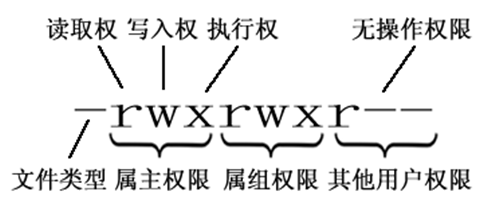
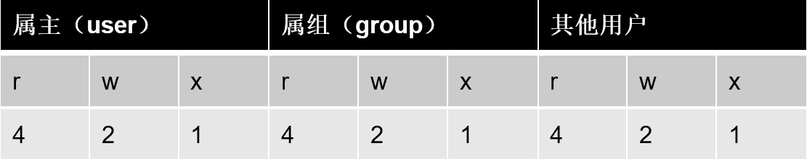
x普通文件（-）目录（d）符号链接（l）字符设备文件（c）块设备文件（s）套接字（s）命名管道（p）普通文件： 包括文本文件、数据文件、可执行的二进制程序文件等。目录文件： Linux系统把目录看成是一种特殊的文件，利用它构成文件系统的树型结构。
xxxxxxxxxxchmod 变更文件或目录的权限。格式: chmod [参数] <文件>参数:-R 以递归方式更改所有的文件及子目录常用:chmod 755 install.logchmod 000 install.logchmod 777 install.logchmod u=rwx,g=rx,o=rx install.logchmod -R 755 aaa
xxxxxxxxxxgroupadd 创建一个用户组,一个用户组中可以有很多用户格式: groupadd <组名称>常用:groupadd mysql 创建一个名为mysql的组
xxxxxxxxxxgroupdel 删除一个已经存在的组,组中必须没有用户格式: groupdel <组名称>常用:groupdel mysql 删除名为mysql的组
xxxxxxxxxxuseradd 创建一个用户格式: useradd [参数] <用户名>参数:-d 指定用户目录,如果不指定在home目录下创建一个同名目录-g 指定用户所属组,如果没有指定组,那么会创建一个同名组常用:useradd test 添加test用户useradd test2 -d /home/test2 指定用户home目录useradd mysql –g mysql 创建一个mysql用户,指定组为mysql组如果在创建用户时没有指定密码,那么新建用户需要设置密码才可以使用格式: passwd <用户>常用:passwd test 为test用户设置密码
xxxxxxxxxxuserdel 删除使用者帐号及相关档案格式: userdel [参数] <用户>参数:-r 使用者目录下的档案一并移除 。 在其他位置上的档案也将一一找出并删除 。常用:userdel test 删除test用户(不会删除home目录)userdel –r test 删除用户以及home目录
xxxxxxxxxxsu 切换登录用户格式: su [选项] [-] [用户]常用:su u1 切换到u1用户su - u1 切换到u1用户，并且将环境也切换到u1用户的环境（推荐使用）root用作为超级管理员切换到其他用户不需要输入密码其他用户切换到root用户需要输入密码
xxxxxxxxxxchown 改变资源的所属用户和组格式: chown [参数] [用户]:[组] <文件>参数:-R 递归处理所有的文件及子目录常用:chown u1:public a.txt 变更当前的目录或文件的所属用户和组chown -R u1:public aaa 变更目录中的所有的子目录及文件的所属用户和组
xxxxxxxxxxping 测试网络是否联通格式: ping <域名或者IP地址>参数:-c 次数,指定ping发送包的次数常用:ping 192.168.150.128ping www.baidu.comping -c 3 www.baidu.com
xxxxxxxxxxifconfig 查看网络状态
xxxxxxxxxxifdown 网卡设备名：禁用该网卡设备。ifup 网卡设备名：启用该网卡设备。
xxxxxxxxxxnetstat 用于查看当前计算机开放的端口，从而判断当前计算机启动了哪些服务格式: netstat <参数>参数:-t：列出TCP协议端口-u：列出UPD协议端口-n：不使用域名和服务名，而使用IP地址和端口号-a：列出所有的网络连接常用:netstat -an 查看当前计算机开放的所有的端口netstat -an | grep 3306 查看占用了3306端口的系统程序
xxxxxxxxxxservice iptables status 查看防火墙状态service iptables start 启动防火墙service iptables stop 关闭防火墙service iptables restart 重启防火墙
xxxxxxxxxxps 正在运行的进程的状态格式: ps [参数]参数-e 所有的进程均显示出来-f 做一个更为完整的输出常用:ps –ef 查看所有进程ps –ef | grep ssh 查找某一进程
xxxxxxxxxxkill 杀掉某一进程格式: kill <进程PID>常用:kill 2868 杀掉2868编号的进程kill -9 2868 强制杀死进程
xxxxxxxxxxLinux上的软件安装有以下几种常见方式1. 二进制发布包:软件已经针对具体平台编译打包发布，只要解压，修改配置即可2. RPM包:软件已经按照redhat的包管理工具规范RPM进行打包发布，需要获取到相应的软件RPM发布包，然后用RPM命令进行安装3. Yum在线安装:软件已经以RPM规范打包，但发布在了网络上的一些服务器上，可用yum在线安装服务器上的rpm软件，并且会自动解决软件安装过程中的库依赖问题4. 源码编译安装:软件以源码工程的形式发布，需要获取到源码工程后用相应开发工具进行编译打包部署。
xxxxxxxxxx我们要在Linux系统桑安装软件,首选需要把软件的安装包上传到Linux机器上FileZilla 这个软件可以帮我们完成文件的传入,直接解压即可使用
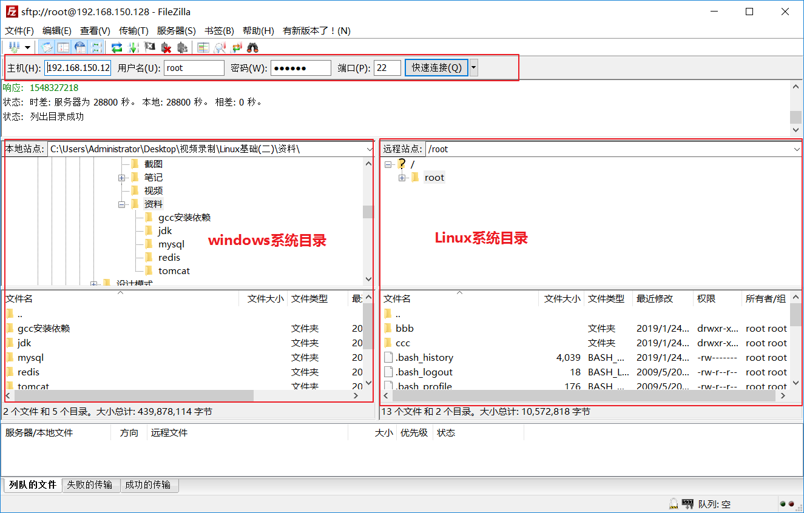
xxxxxxxxxx[root@localhost /]# java –version #查看当前系统jdk版本[root@localhost /]# rpm -qa | grep java #查找jdkjava-1.6.0-openjdk-1.6.0.35-1.13.7.1.el6_6.i686tzdata-java-2015e-1.el6.noarchjava-1.7.0-openjdk-1.7.0.79-2.5.5.4.el6.i686卸载自带的jdk[root@localhost jdk]# rpm -e --nodeps java-1.6.0-openjdk-1.6.0.35-1.13.7.1.el6_6.i686[root@localhost jdk]# rpm -e --nodeps java-1.7.0-openjdk-1.7.0.79-2.5.5.4.el6.i686
xxxxxxxxxx在Linux上创建软件安装目录`/service/toos/`[root@localhost /]# mkdir -p /service/tools #创建多级目录,以后软件就安装在这个目录下
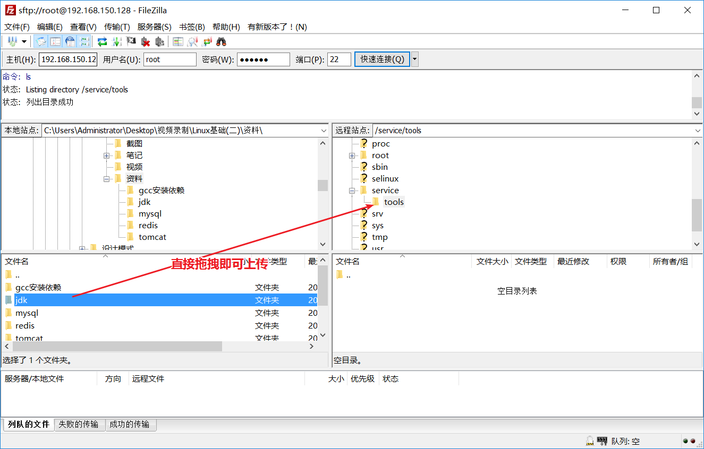
xxxxxxxxxx[root@localhost /]# cd /service/tools/ #进入到安装文件目录下[root@localhost tools]# cd jdk/ #进入到jdk目录下[root@localhost jdk]# tar -xzvf jdk-7u71-linux-i586.tar.gz #解压jdk[root@localhost jdk]# cd jdk1.7.0_71/ #进入到解压后的目录下[root@localhost jdk1.7.0_71]# pwd #查询当前工作目录/service/tools/jdk/jdk1.7.0_71
xxxxxxxxxx1. 编辑`/etc/profile` 文件[root@localhost jdk]# vim /etc/profile2. 在末尾行添加#set java environmentJAVA_HOME=/service/tools/jdk1.8.0_191 #自己解压的jdk的路径CLASSPATH=.:$JAVA_HOME/lib.tools.jarPATH=$JAVA_HOME/bin:$PATHexport JAVA_HOME CLASSPATH PATH3. 保存退出[root@localhost jdk]# source /etc/profile 使更改的配置立即生效4. 注意1.jdk的版本一定要与系统版本一致(centos 32 jdk 32 )2.配置环境变量时JAVA_HOME=/service/tools/jdk1.8.0_191 一定要是自己解压的jdk的路径
xxxxxxxxxx[root@localhost jdk]# rpm -qa | grep mysql #查找CentOS 自带的mysqlmysql-libs-5.1.73-5.el6_6.i686卸载CentOS自带的mysql[root@localhost jdk]# rpm -e --nodeps mysql-libs-5.1.73-5.el6_6.i686
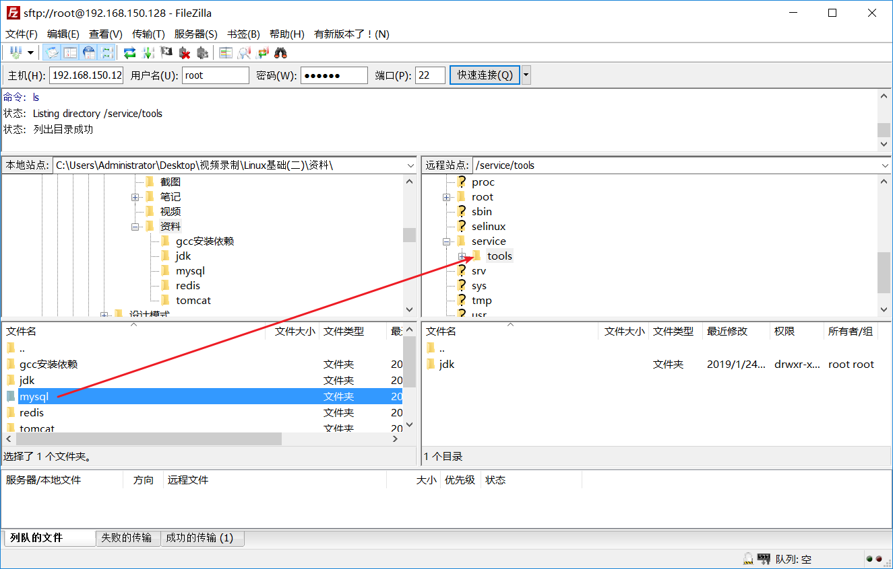
xxxxxxxxxx[root@localhost mysql]# cd /service/tools/mysql/ # 切换到MYSQL安装目录下[root@localhost mysql]# tar -xvf MySQL-5.6.22-1.el6.i686.rpm-bundle.tar # 解压MYSQL安装包MySQL-shared-compat-5.6.22-1.el6.i686.rpmMySQL-server-5.6.22-1.el6.i686.rpmMySQL-client-5.6.22-1.el6.i686.rpmMySQL-devel-5.6.22-1.el6.i686.rpmMySQL-test-5.6.22-1.el6.i686.rpmMySQL-shared-5.6.22-1.el6.i686.rpmMySQL-embedded-5.6.22-1.el6.i686.rpm
xxxxxxxxxx安装MYSQL服务器[root@localhost mysql]# rpm -ivh MySQL-server-5.6.22-1.el6.i686.rpm安装MYSQL客户端[root@localhost mysql]# rpm -ivh MySQL-client-5.6.22-1.el6.i686.rpm开启MYSQL服务[root@localhost mysql]# service mysql startStarting MySQL.[确定]查看MYSQL密码[root@localhost mysql]# cat /root/.mysql_secret# The random password set for the root user at Tue Aug 21 21:15:34 2018 (local time): S0ANhsOTE5wdFLKn登录MYSQL[root@localhost mysql]# mysql -uroot -pS0ANhsOTE5wdFLKn修改MYSQL初始密码mysql> set password = password('zl');Query OK, 0 rows affected (0.12 sec)
xxxxxxxxxx1. 赋予root用户远程连接mysql的权限GRANT ALL ON *.* TO '用户名'@'%' IDENTIFIED BY '连接密码'2. 刷新权限flush privileges ;3. 使用可视化界面连接上Mysql -- 保证防火墙已经关闭
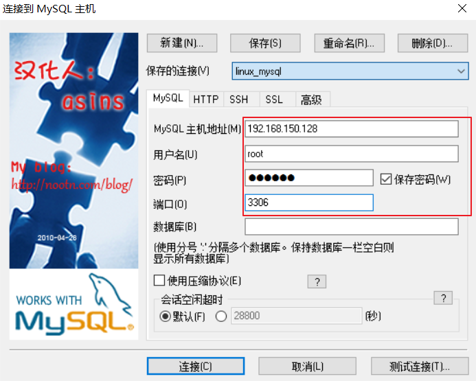
xxxxxxxxxx1. 没有网络[root@localhost gcc安装依赖]# rpm -U libgcc-4.4.7-23.el6.i686.rpm[root@localhost gcc安装依赖]# rpm -U libgomp-4.4.7-23.el6.i686.rpm[root@localhost gcc安装依赖]# rpm -ivh mpfr-2.4.1-6.el6.i686.rpm[root@localhost gcc安装依赖]# rpm -ivh cpp-4.4.7-23.el6.i686.rpm[root@localhost gcc安装依赖]# rpm -ivh ppl-0.10.2-11.el6.i686.rpm[root@localhost gcc安装依赖]# rpm -ivh cloog-ppl-0.15.7-1.2.el6.i686.rpm[root@localhost gcc安装依赖]# rpm -ivh gcc-4.4.7-23.el6.i686.rpm2. 有网络yum install gcc
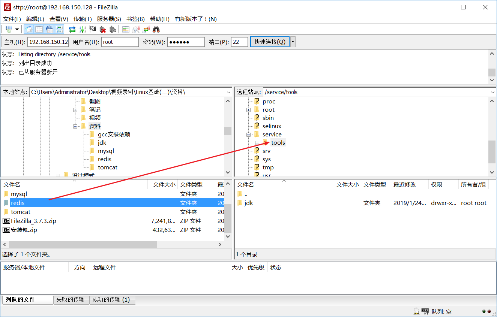
xxxxxxxxxx[root@localhost redis]# tar -xzvf redis-3.2.8.tar.gz
xxxxxxxxxx[root@localhost redis-3.2.8]# cd /service/tools/redis/redis-3.2.8 # 切换到redis的解压目录[root@localhost redis-3.2.8]# make MALLOC=libc # 编译redis[root@localhost redis-3.2.8]# make PREFIX=/service/redis install # 安装redis到指定目录,prefix参数就是安装目录切换到安装目录下,查看执行文件[root@localhost redis]# cd /service/redis/bin/[root@localhost bin]# ll总用量 4560-rwxr-xr-x. 1 root root 220968 8月 21 22:12 redis-benchmark-rwxr-xr-x. 1 root root 16475 8月 21 22:12 redis-check-aof-rwxr-xr-x. 1 root root 2046197 8月 21 22:12 redis-check-rdb-rwxr-xr-x. 1 root root 328317 8月 21 22:12 redis-clilrwxrwxrwx. 1 root root 12 8月 21 22:12 redis-sentinel -> redis-server-rwxr-xr-x. 1 root root 2046197 8月 21 22:12 redis-server
xxxxxxxxxx[root@localhost bin]# ./redis-server
xxxxxxxxxx[root@localhost bin]# ./redis-cli
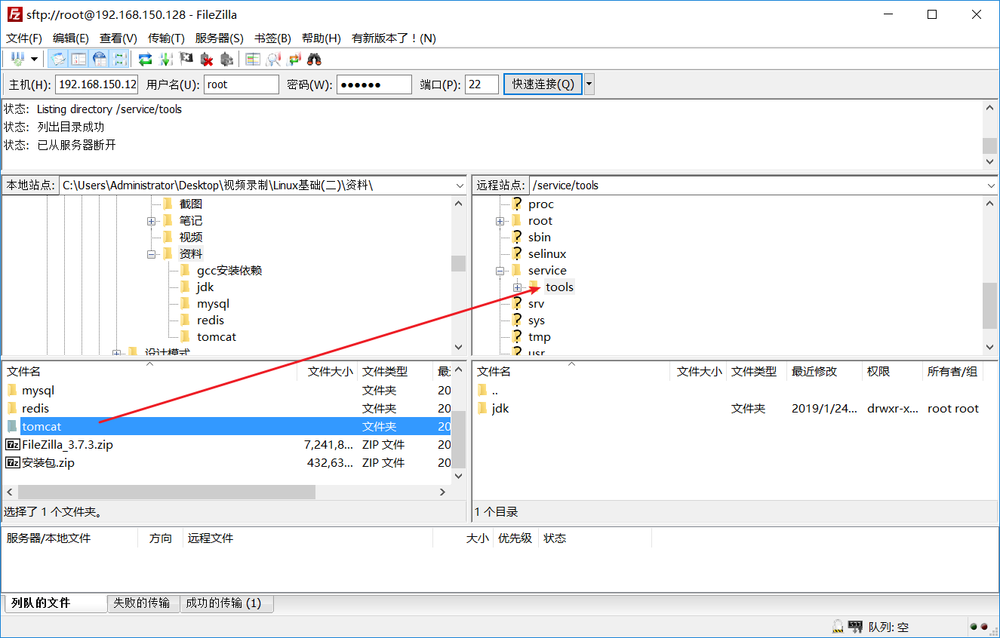
xxxxxxxxxx[root@localhost mysql]# cd /service/tools/tomcat/[root@localhost tomcat]# tar -xzvf apache-tomcat-7.0.57.tar.gz
xxxxxxxxxx[root@localhost tomcat]# cd /service/tools/tomcat/apache-tomcat-7.0.57/bin/ # 切换到tomcat可执行文件目录下[root@localhost bin]# ./startup.sh # 执行命令,开启tomcat
xxxxxxxxxx打开浏览器,输入http://192.168.150.128:8080
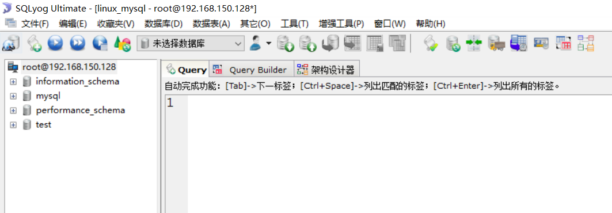
xxxxxxxxxxCREATE DATABASE travel CHARACTER SET utf8 ;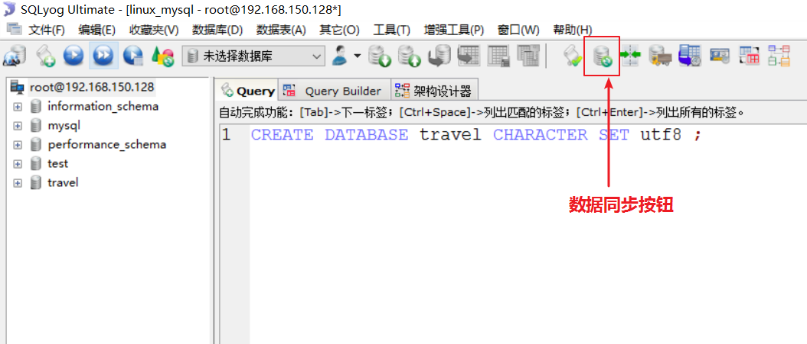
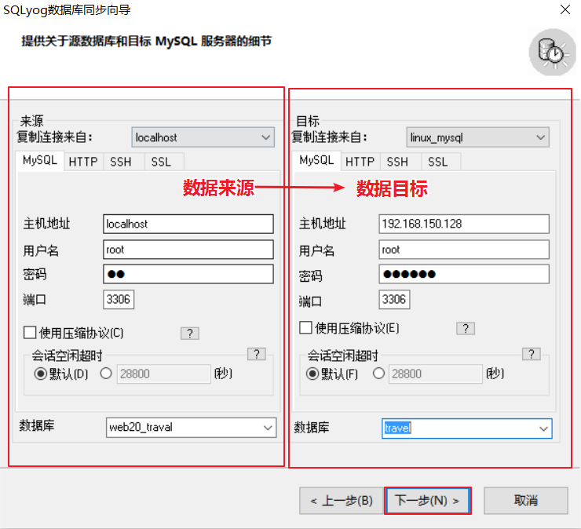
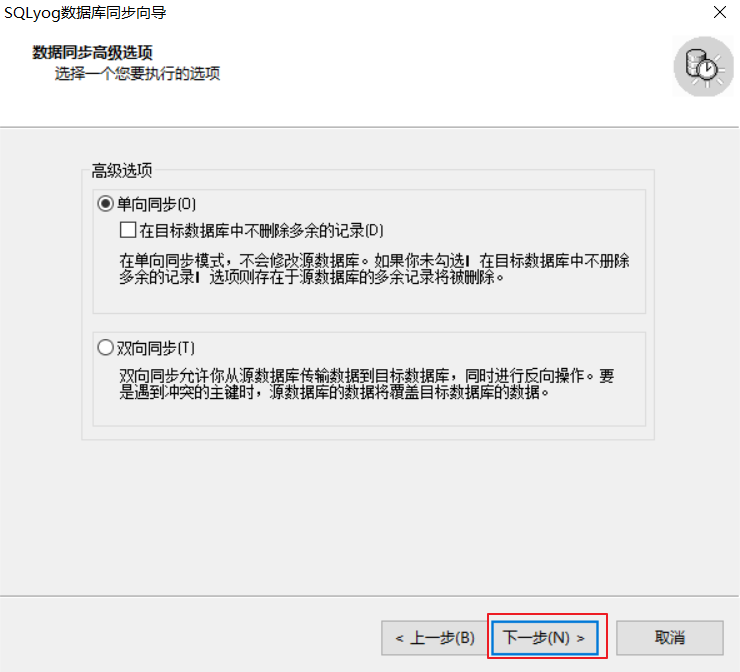
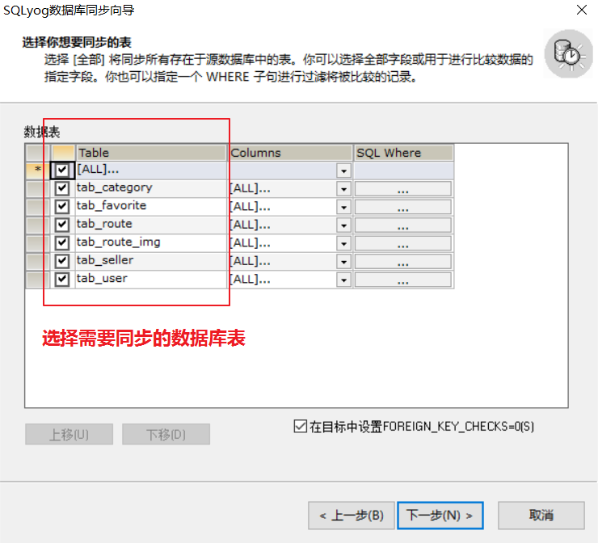
以后直接下一步-->下一步-->完成即可
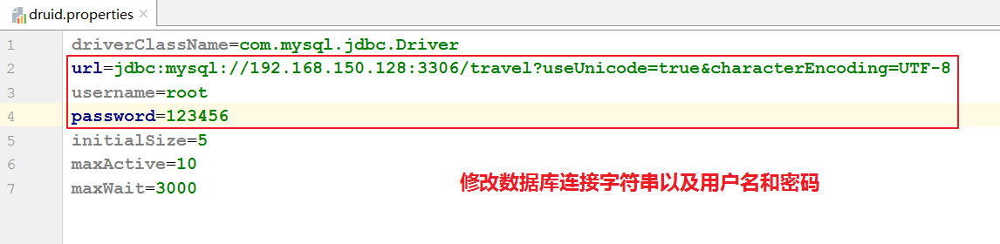
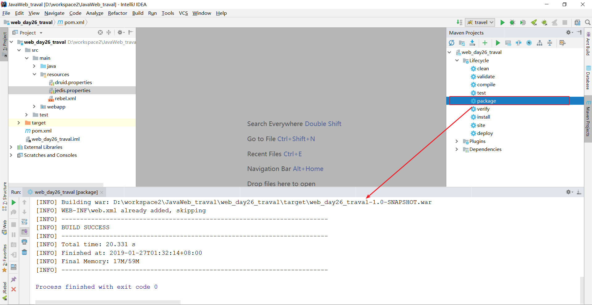
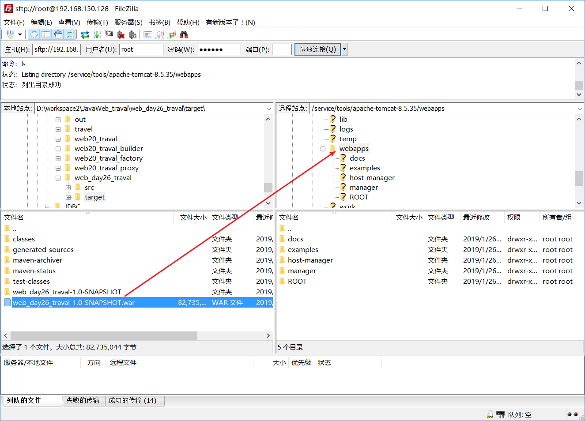
xxxxxxxxxx[root@localhost tomcat]# cd /service/tools/tomcat/apache-tomcat-7.0.57/bin/ # 切换到tomcat可执行文件目录下[root@localhost bin]# ./startup.sh # 执行命令,开启tomcat
xxxxxxxxxx打开浏览器输入:http://192.168.150.128:8080/web_day26_traval-1.0-SNAPSHOT
xxxxxxxxxx问题: 直接将war包上传到tomcat的webapps目录下会有一个问题,就是访问的路径比较长不太好记忆解决: ROOT在tomcat的webapps中是一个比较特殊的项目名称,通过浏览器访问ROOT项目,不需要虚拟目录,所以如果想要更加简单的访问导我们的项目,只需要将原来的ROOT删除,将我们的war包改名叫ROOT.war即可